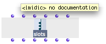

OpenMusic DocumentationHiérarchie de section : OM 6.6 User Manual > Visual Programming II > Instances > Slots
OpenMusic DocumentationHiérarchie de section : OM 6.6 User Manual > Visual Programming II > Instances > Slots
Navigation : page précédente | page suivante
Attention, votre navigateur ne supporte pas le javascript ou celui-ci à été désactivé. Certaines fonctionnalités de ce guide sont restreintes.
Reading and Modifying Instances : Slots
The slots box can read or modify the slots values – "fields" or parameters – of an instance or global variable.
About Instance Boxes and Global Variables
Properties
Creating a Slots Box
**** To create a slots box :
Cmdclick in a patch editor and type a class name, as for any other boxkeep
SHIFTpressed when validating.
You can also
create a factory box
select it and press
Altdrag the box with
SHIFTkey pressed.
Morphology

|
The structure and morphology of a slots box is similar to those of its corresponding factory box. The slots box also has a "self", and a number of parametric slots. |
For instance, the slots box created out of a chord instance has the same inputs and outputs : self , lmidic for midicents, lvel for velocities, loffset for notes offsets , ldur for durations, lchan for midi channels. It also has the same icon. |

|
Behaviour
When the slots box is evaluated :
- The outputs of slots return the values of an instance's corresponding slots.
- The inputs of slots can take values which are assigned tothe corresponding slots of the object.
Using the Slots Box to Modify an Instance
Using "slots" allows to read and modify the parameters of an object without creating new instances out of new factory boxes :
Constraint
The "self" input of slots must be connected to the "self" output of an object, in order to set the object whose slots are to be read and/or modified.
Reading Values

To read the value(s) of an instance's slot :
connect the instance to the "self" input of slots,
evaluate the corresponding output of slots.
Modifying the Values of an Object
To modify the value(s) of an instance's slot :
connect the instance to the "self" input of slots,
enter new values in the relevant input of slots,
evaluate slots

Note that the reference of the object hasn't changed, despite the fact the object's content has changed.
Applying Slots to Factory Boxes
The same procedures can apply to factory boxes.
|

|
Modifying an Object in an Abstraction
With a slots box, an instance can be passed through the inputs of an abstraction and mainpulated without resorting to a new factory boxes, which would generate copies of the instance. This is sometimes necessary :
for optimization purposes
to ensure keeping the original instance one operates upon.

|
To read or modify the parametric values of an instance from inside an abstraction :
|
1 - Using Instance Values in a Sub-Patch to Create a New Object

In the sub patch editor, add a chord box and create a corresponding slots box.
Add the items required to modify the values of the chord, and connect them to the .
Connect these items to slots, and to the factory box.
Connect the remaining inputs of the factory box to the corresponding outputs of slots box.
Connect the input of the sub patch to the "self" input of slots
Connect the output of the sub patch to the "self" output of the factory box.
Evaluate the factory box outside the patch.
The input instance values are read and used for generating a new object.
2 - Modifying an Instance in a Sub-Patch

The input values of the instance are read and modified by the second slots box. Chord #2 is also modified, since chord #1 has been modified.
When the initial instance coming from a factory box is modified, you may need to refresh the box minivie in order to visualize the changes.
Références :
Plan :
Navigation : page précédente | page suivante
A propos...(c) Ircam - Centre Pompidou